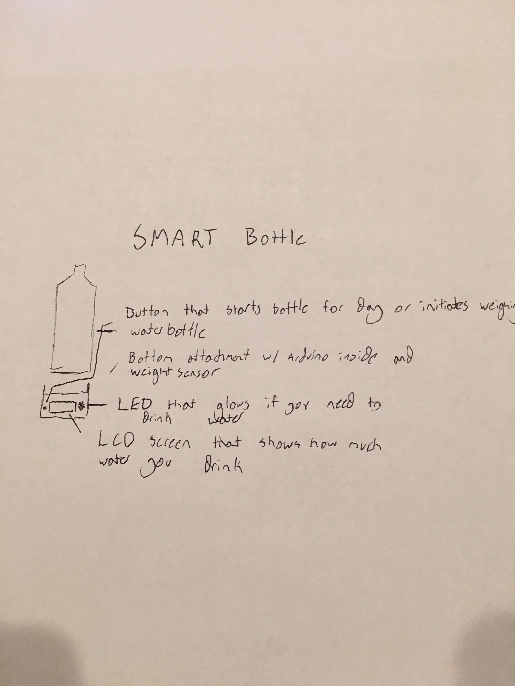
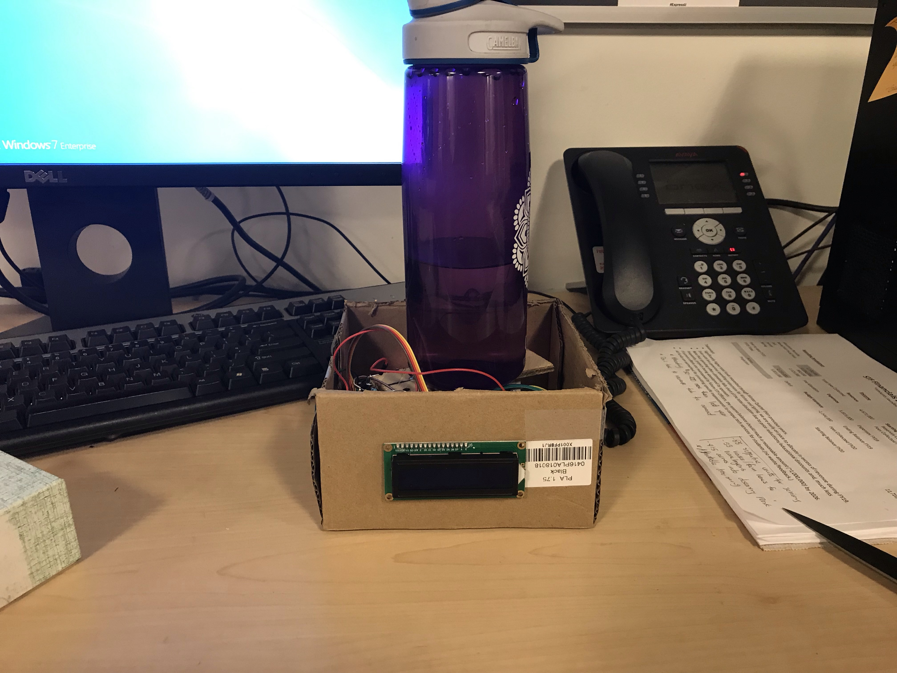
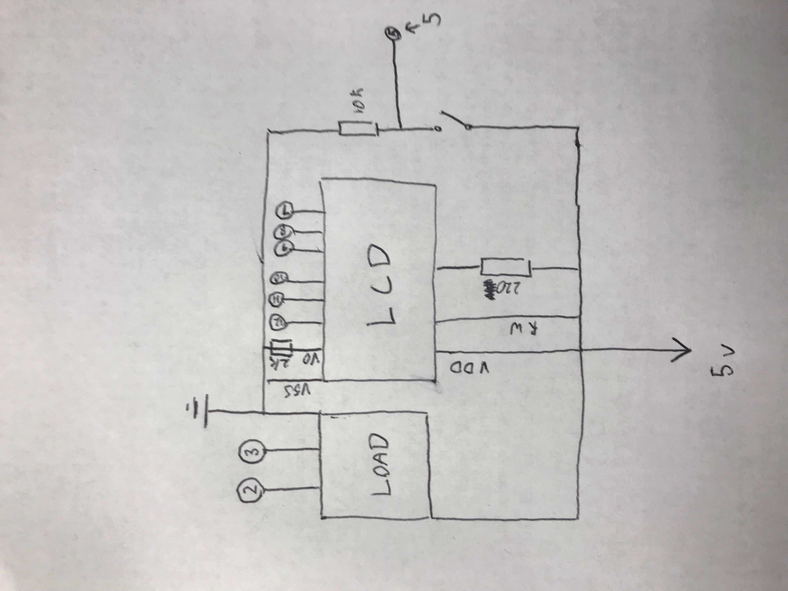

Espen Scheuers's Final Project!
Here is a photo of my first sketch of my final project.

Here are some photos of my final project.
Here are some photos of my final project after the presentations when I put an enclosure on it.
I struggled with putting a top on it because I didn't want to cover the scale so I left it open.

good and a 220k on the other because that's what the data sheet called for. The button I just used
a 10k because that'swhat Nadya told us to do early on.


// get libraries define constants get variables
#include "HX711.h"
#include
#define DOUT 3
#define CLK 2
HX711 scale;
const int rs = 12, en = 11, d4 = 10, d5 = 9, d6 = 8, d7 = 7;
LiquidCrystal lcd(rs, en, d4, d5, d6, d7);
bool drinkTime = true;
float calibration_factor = 440000; //-7050 worked for my 440lb max scale setup
float highWaterMark;
float lowWaterMark;
float totalDrank = 0;
String today = "You drank ";
void setup() {
// Setting lcd up and setting scale up
Serial.begin(9600);
lcd.begin(16, 2);
lcd.setCursor(0,0);
pinMode(5, INPUT);
scale.begin(DOUT, CLK);
scale.set_scale();
scale.tare(); //Reset the scale to 0
scale.set_scale(calibration_factor); //Adjust to this calibration factor
long zero_factor = scale.read_average(); //Get a baseline reading
// print starting amount (0)
lcd.print(today);
lcd.print(totalDrank);
lcd.print(" l");
}
void loop() {
// if button is pressed and its the first time
// store the weight
if(digitalRead(5) == HIGH && drinkTime) {
lcd.clear();
highWaterMark = scale.get_units(5);
Serial.println(highWaterMark);
drinkTime = !drinkTime;
lcd.print("Drink you sheep");
}
// if button is pressed for the second time
// subtract original weight from new weight
// print amount drank
// add that to total drinkage
if(digitalRead(5) == HIGH && !drinkTime) {
lcd.clear();
lowWaterMark = scale.get_units(5);
Serial.println(lowWaterMark);
drinkTime = !drinkTime;
float drank = abs(highWaterMark - lowWaterMark);
lcd.print("Drank ");
lcd.print(drank);
lcd.print(" l");
delay(2000);
totalDrank += drank;
lcd.clear();
lcd.print(today);
lcd.print(totalDrank);
lcd.print(" l");
}
}